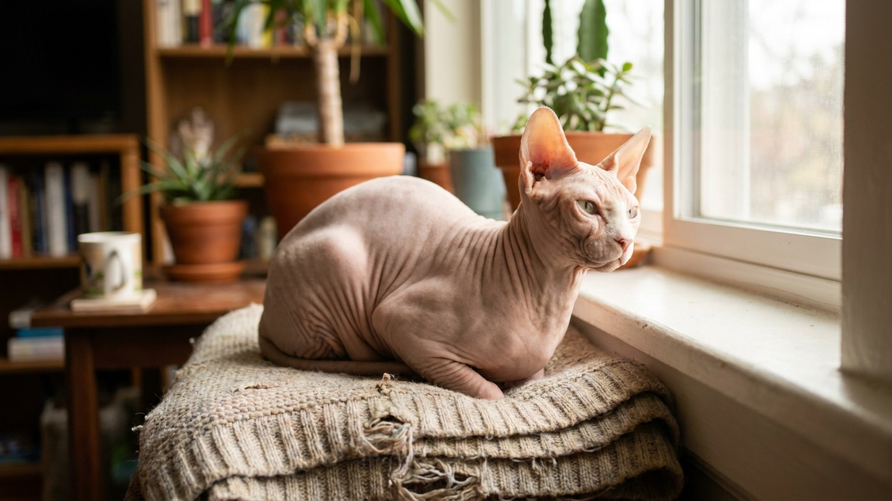

Сфинкс: почему лысый кот требует больше ухода, чем шёрстный

13 июня 2026 · 8 минут чтения · Породы кошек
Сфинкс выглядит так, будто за ним легко ухаживать: нет шерсти — нет проблем с расчёской и линькой. На деле сфинкс — одна из самых требовательных к уходу пород. Кожа без шерстяного покрова активно выделяет жир, набирает пыль и пачкает всё вокруг. Разбираем мифы о сфинксе и то, как уход выглядит на практике.
Миф 1: сфинкс гипоаллергенный
Это самый распространённый миф о породе. Аллергия на кошек вызвана не шерстью, а белком Fel d 1 — он содержится в слюне, коже и выделениях сальных желёз. Сфинкс вырабатывает этот белок так же активно, как шёрстные кошки.
- Сфинкс не гипоаллергенен. Некоторые аллергики переносят его легче — но это индивидуально, не гарантировано.
- Кожные выделения сфинкса видны и ощущаются на руках — это и есть источник аллергена.
- Если в семье есть аллергик — до покупки проведите 2–3 часа с конкретным котёнком сфинкса в помещении.
Миф 2: лысый кот не пачкается
Кожа сфинкса постоянно выделяет кожный жир (себум) — коричневато-жёлтое маслянистое вещество. У шёрстных кошек он распределяется по шерсти и не так заметен. У сфинкса накапливается на коже, в складках, на ушах и лапах — и пачкает всё, с чем кот контактирует.
- Диван, одежда, постельное бельё будут в желтоватых пятнах, если не купать кота регулярно.
- Складки на шее, животе, подмышках и хвосте — места максимального накопления выделений.
- Без регулярного ухода кожа воспаляется, появляется неприятный запах.
Как правильно купать сфинкса
Сфинкса купают раз в 1–2 недели — это необходимость, а не излишество. Если кот не приучен с детства, купание превратится в борьбу.
- Температура воды: 37–38°C — чуть теплее, чем для людей. Сфинкс мёрзнет быстро.
- Шампунь: специальный для кошек без шерсти или мягкий детский шампунь без отдушек. Никаких «универсальных» шампуней для людей — pH кожи кошки другой.
- Складки: промывайте мягкой тканью или пальцем — не оставляйте влагу внутри, тщательно высушивайте.
- После купания: сразу заверните в тёплое полотенце — сфинкс охлаждается буквально за минуты. Фен на низкой температуре или тёплый плед.
- Приучение котёнка: начинайте с первых недель жизни дома. Каждый раз — спокойно, без форсирования.
Уши сфинкса: самая частая проблема
Уши сфинкса — отдельная история. Без шерсти внутри ушной раковины нет естественного фильтра, поэтому пыль, кожный жир и выделения накапливаются быстро. Тёмно-коричневые выделения в ушах сфинкса — норма, не ушной клещ (но отличить визуально сложно).
- Чистить уши раз в неделю — стандартный режим. При сильном загрязнении — чаще.
- Используйте лосьон для чистки ушей для кошек и ватные диски — не ватные палочки вглубь.
- Если выделения чёрные, с резким запахом или кот трясёт головой — обратитесь к ветеринару: это уже не обычное загрязнение.
Температурный режим: сфинкс мёрзнет
Без шерстяного покрова сфинкс теряет тепло значительно быстрее шёрстных пород. Это нужно учитывать в быту.
- Комфортная температура в квартире для сфинкса — 22–25°C. Ниже 18°C — кот будет искать источник тепла и мёрзнуть.
- Сквозняки опасны: кот, который лежит под работающим кондиционером или у открытого окна, переохлаждается.
- Одежда для сфинксов — не модная прихоть. В холодный сезон или при путешествиях одежда оправдана.
- Нагревательные лежанки, тёплые пледы, радиатор — сфинкс найдёт самое тёплое место сам, но дайте ему выбор.
- На улице: только при температуре выше 20–22°C и в защите от прямого солнца — кожа без шерсти получает ожог.
Когти и лапы сфинкса
Когтевые желобки у сфинкса накапливают тёмное маслянистое вещество — это продолжение той же проблемы с кожными выделениями. Без чистки накопление становится значительным.
- Раз в неделю осматривайте когти и желобки вокруг них. При накоплении — очищайте ватным диском, смоченным в тёплой воде.
- Когти стригите раз в 2–3 недели — у сфинксов они быстро отрастают.
- Когтеточка обязательна: без неё кот будет точить когти о мягкую мебель.
Питание сфинкса: почему порция больше нормы
Сфинкс тратит значительно больше калорий на поддержание температуры тела — у него нет теплоизолирующего шерстяного покрова. Это означает повышенный метаболизм и более высокую потребность в калориях по сравнению с шёрстными кошками того же размера.
- Норму корма для сфинкса считайте с поправкой на активность и комнатную температуру — уточните у ветеринара.
- Сфинксы едят много и активно. Не ограничивайте сильно — но и свободный доступ приводит к перееданию.
- Влажный корм важен для гидратации: у этой породы повышенный риск заболеваний мочевыводящих путей.
Что важно знать перед покупкой сфинкса
Сфинкс — порода для осознанного владельца. Если вы готовы купать кота каждые 1–2 недели, чистить ему уши еженедельно, держать в квартире комфортную температуру и мириться с жирными следами на светлой одежде — это замечательная, тёплая и преданная порода.
- Плановые визиты к ветеринару раз в год — стандарт. Для сфинкса рекомендуют проверять сердце: порода предрасположена к гипертрофической кардиомиопатии.
- Приучайте к уходу с первых дней: купание, чистка ушей, стрижка когтей должны стать привычным ритуалом.
- Сфинкс очень социален — он плохо переносит одиночество. Если вы часто отсутствуете, рассмотрите двух кошек.
🐾 Первая помощь — всегда под рукой
AnimaLife подскажет, что делать в тревожной ситуации с питомцем ещё до визита к врачу. Откройте в один тап.
Открыть AnimaLife → Открыть в MAX →
🐾 Понравился разбор?
Подпишитесь на канал — каждый день разбираем по одному тревожному симптому у кошек и собак: что в пределах нормы, а когда пора к врачу. Подпишитесь, чтобы не пропустить разбор, который может спасти здоровье вашего питомца.
Материал носит информационный характер и не заменяет очную консультацию ветеринара.
← Все статьи · Открыть AnimaLife в Telegram · RSS